A quick tour of the GUI.
A fast walk through BIDS Manager's windows and what each one does, so you can see at a glance how the app fits together.
The tutorial takes you through the same workflow step by step, from creating a project to a validated dataset.
BIDS Manager opens on the Home tab, where you create or open a dataset project, and then gives you two working views: the Converter (raw to BIDS) and the Editor (read, fix, validate). Click anything on this page to take a closer look, and switch the theme in the header to see it in light or dark.
Home, Converter, Editor.
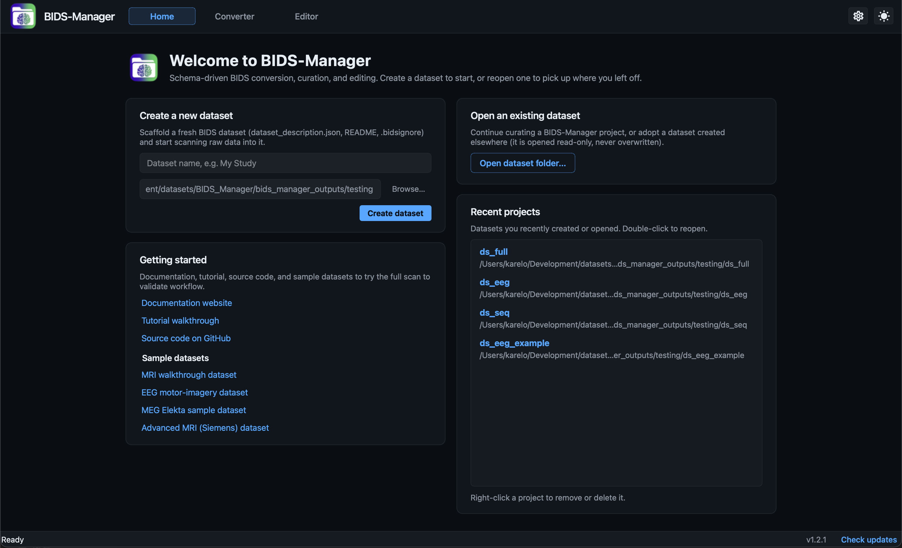
Home: start or resume a project
BIDS Manager is project-first. Before you scan anything you point it at a dataset folder, and from then on every scan, every edit, and every decision is written into that project. You can quit the app mid-curation and pick up exactly where you left off, and re-running a conversion merges new data in instead of overwriting.
- Create a new dataset scaffolds a fresh
BIDS folder (
dataset_description.json, a README, and a.bidsignore) ready to scan raw data into. The folder name becomes the dataset slug. - Open an existing dataset continues a BIDS Manager project, or adopts a dataset created elsewhere. Adopted datasets are opened read-only so you can browse and validate them without risk.
- Recent projects reopen with a double-click (right-click to remove or delete); Getting started links the docs, this tutorial, and the downloadable sample datasets.
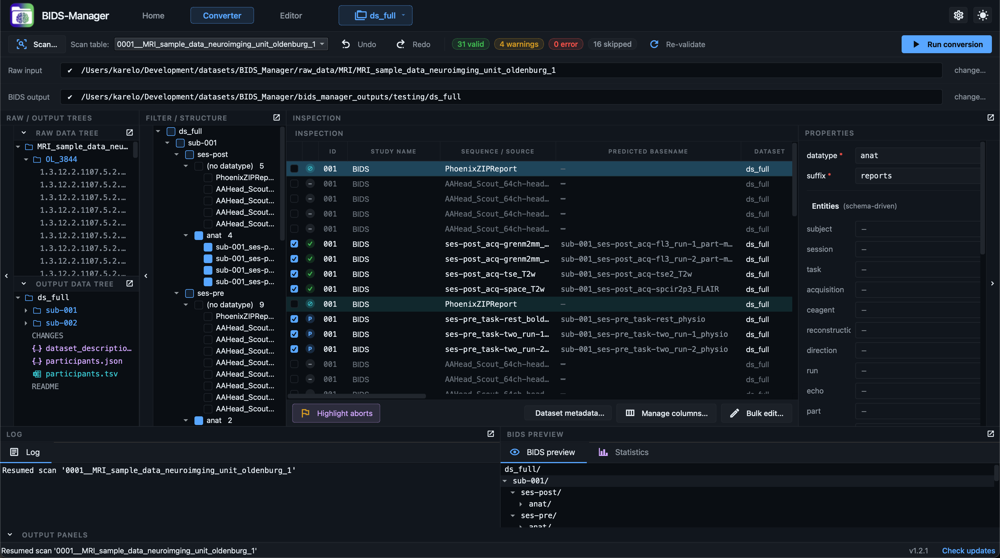
Converter: raw → BIDS
The Converter is where curation happens: you review every recording the scan found, MRI, PET, EEG, MEG, iEEG and the physiological signals stored inside MRI DICOM files, and decide what becomes BIDS before a single file is written. The top header carries the Scan button, the active-project switcher, Undo / Redo, the live status chips, and Run conversion; two PathBars below show the raw input folder and the project's locked BIDS output.
- Raw & output trees (left): browse the input folder as it really is on disk, and preview the exact BIDS layout the conversion will produce.
- Filter / structure: every series grouped by schema entity (subject / session / datatype), so you can filter the table or exclude whole groups at once.
- Inspection table: the centre of gravity, one editable row per series, colour-coded by status, with Dataset metadata, Manage columns, and Bulk edit beneath it.
- Properties: a schema-aware editor for the selected row that shows only valid entities and a live predicted path.
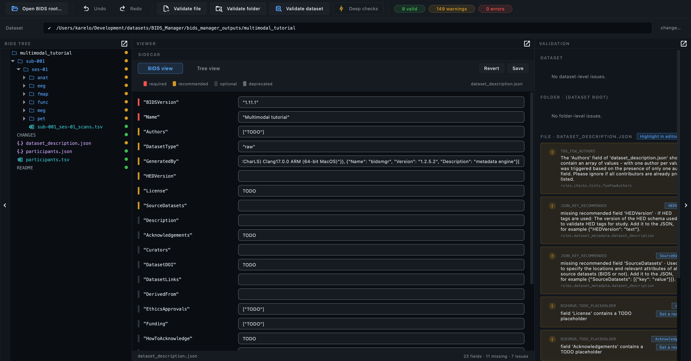
Editor: read, fix, validate
The Editor opens the converted dataset for review and repair. Its toolbar runs validation at three scopes (single file, folder, or whole dataset), with a Deep checks toggle that also opens NIfTI image headers to catch truncated or corrupt files, and severity chips that summarise the current issues.
- BIDS tree: the converted layout with a status dot per file, green for clean, amber for warnings, red for errors.
- Centre viewer: routes by file type, a schema-aware form for JSON sidecars, an editable table for TSVs, the Multi-Planar view for NIfTI, and an interactive signal viewer for MEG / EEG / iEEG recordings.
- Validation pane: the issue list by severity; click an item to jump straight to the file that triggered it.
From raw files to a validated dataset.
Each part of the workflow, in the order you would reach for it. Click any one to take a closer look.
1. Start a project
Create a new BIDS dataset or open an existing one, then move between open projects from the header.
Create or open a dataset
Switch projects from the header
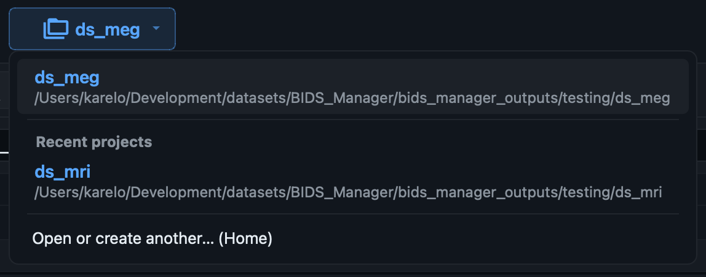
2. Scan the raw data
Point at the raw input folder and let the scanner read the metadata inside every file. Teach it your own rules when the defaults miss something.
Point at your raw data
.ds folders, physio logs). The
output is already locked to the project, so this one path
is all you set.
Scan
Teach the scanner your rules
--rules-file.
3. Curate and inspect
Review every conversion decision before anything is written. Filter, bulk-edit, set per-row properties, enrich EEG / MEG metadata, and preview the exact BIDS tree.
Colour-coded inspection
Filter and structure
Bulk edit
Manage columns
Per-row properties
Dataset metadata

Names that would collide

run number where the standard
allows one; where it does not, both basenames turn red and the
conversion refuses to start rather than write one recording
over the other. Fixing either row clears the red on both, since
the state is recomputed from the table as it stands.
Preview the BIDS tree
4. Convert
Run the right backend per modality, with conversion and the post-conversion chain configurable in Settings.
Run the conversion
dcm2niix for DICOM,
mne-bids for EEG / MEG / iEEG,
bidsphysio for Siemens physio).
Subjects stage in a private temp tree and commit
atomically; the Log dock streams every line, and re-runs
merge new data in safely.
Convert & post-convert settings

5. Inspect the converted data
Open the result in the Editor and look at volumes, time series, and MEG / EEG / iEEG recordings, all rendered in-app.
NIfTI viewer
3-D volume rendering
4-D time series
MEG / EEG / iEEG signal viewer
6. Edit and validate
Fix sidecars and tables in place, then audit the dataset against the BIDS schema and jump straight to any issue.
Edit JSON sidecars
.json sidecar opens
a schema-aware form: fields are colour-coded by level
(required / recommended / optional / deprecated), and you
can add or delete fields, edit values, and revert or save.
A Tree view shows the raw key / value structure when you
need it.
Edit TSV tables
participants.tsv,
channels.tsv,
events.tsv,
*_scans.tsv) open in an
editable table that loads on a background thread, so even
very large or wide files appear instantly and never freeze
the window.
Validate the dataset
Where a finding comes from
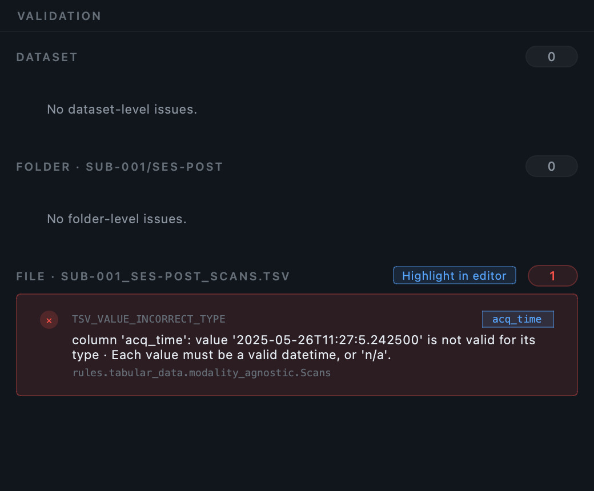
rules.tabular_data.modality_agnostic.Scans
points at the part of the standard the requirement is drawn
from, so it can be checked rather than taken on trust. The same
provenance appears in the HTML report.
Jump to issues from the chips
7. Settings
Sensible defaults out of the box, so you can convert a dataset without opening this at all. The gear in the header opens seven tabs; everything in them is remembered between sessions, and Restore defaults puts any of it back.
BIDS version
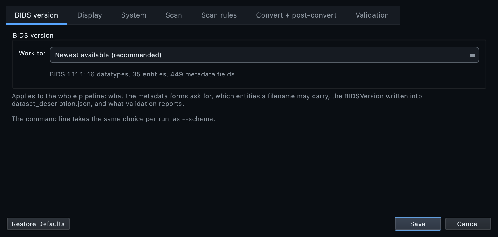
BIDSVersion written into
dataset_description.json, and what
validation judges the result by. Several versions ship with the
application, so a dataset built against an older one can be worked
on in its own terms. The command line takes the same choice per run
as --schema.
Display
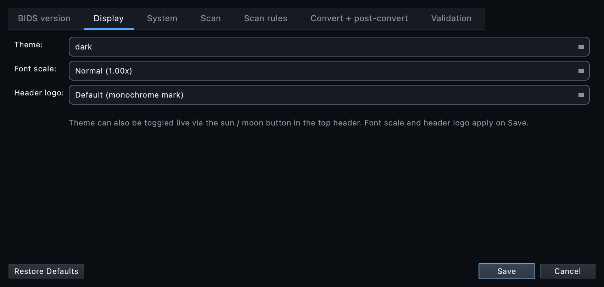
System
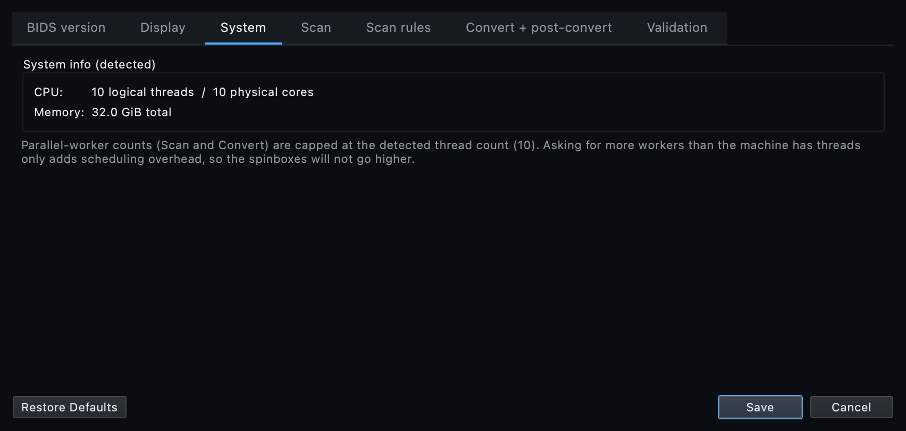
Scan
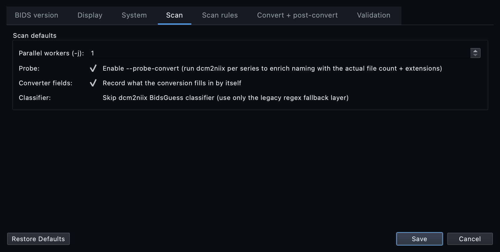
Scan rules
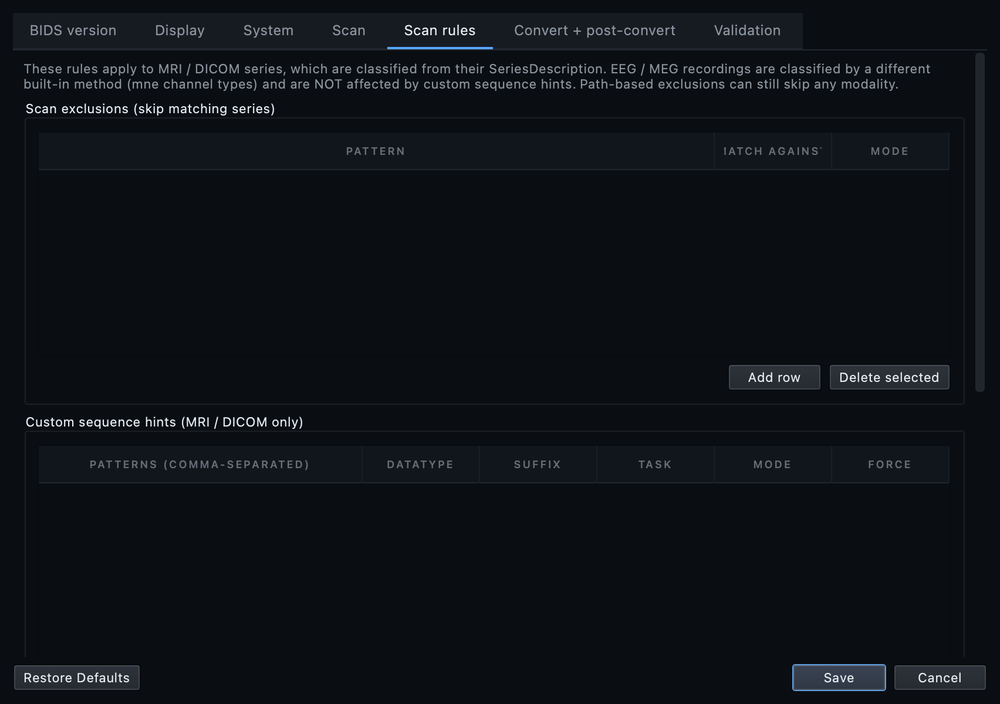
--rules-file.
Convert and post-convert
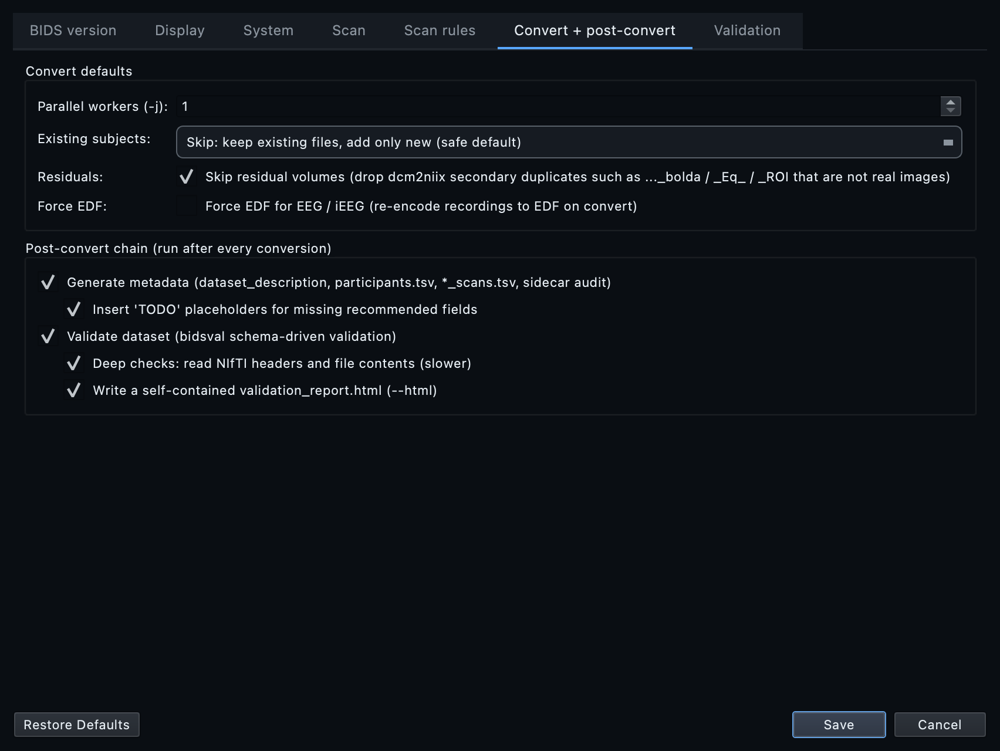
Validation
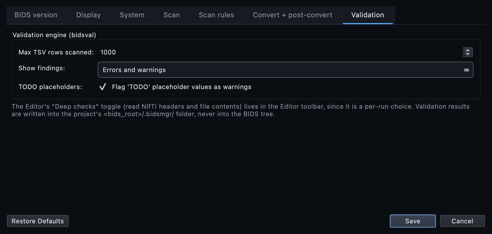